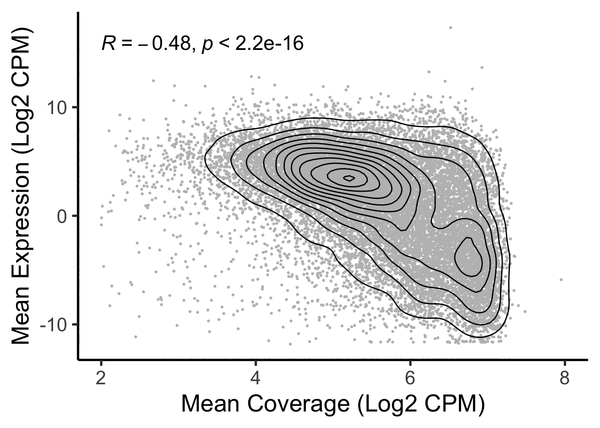
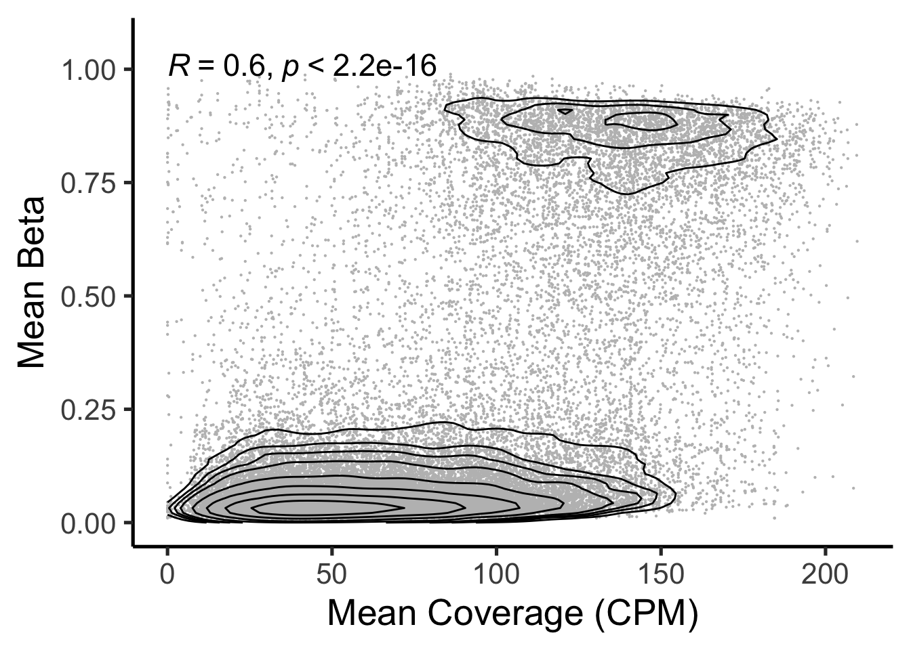

Last updated: 2024-02-14
Checks: 6 1
Knit directory: noe2024/
This reproducible R Markdown analysis was created with workflowr (version 1.7.1). The Checks tab describes the reproducibility checks that were applied when the results were created. The Past versions tab lists the development history.
The R Markdown is untracked by Git. To know which version of the R
Markdown file created these results, you’ll want to first commit it to
the Git repo. If you’re still working on the analysis, you can ignore
this warning. When you’re finished, you can run
wflow_publish to commit the R Markdown file and build the
HTML.
Great job! The global environment was empty. Objects defined in the global environment can affect the analysis in your R Markdown file in unknown ways. For reproduciblity it’s best to always run the code in an empty environment.
The command set.seed(20240129) was run prior to running
the code in the R Markdown file. Setting a seed ensures that any results
that rely on randomness, e.g. subsampling or permutations, are
reproducible.
Great job! Recording the operating system, R version, and package versions is critical for reproducibility.
Nice! There were no cached chunks for this analysis, so you can be confident that you successfully produced the results during this run.
Great job! Using relative paths to the files within your workflowr project makes it easier to run your code on other machines.
Great! You are using Git for version control. Tracking code development and connecting the code version to the results is critical for reproducibility.
The results in this page were generated with repository version c05a4ef. See the Past versions tab to see a history of the changes made to the R Markdown and HTML files.
Note that you need to be careful to ensure that all relevant files for
the analysis have been committed to Git prior to generating the results
(you can use wflow_publish or
wflow_git_commit). workflowr only checks the R Markdown
file, but you know if there are other scripts or data files that it
depends on. Below is the status of the Git repository when the results
were generated:
Ignored files:
Ignored: .DS_Store
Ignored: code/.DS_Store
Ignored: data/results/
Untracked files:
Untracked: analysis/Figure3E.Rmd
Untracked: analysis/Supplementary_Figure1.Rmd
Untracked: analysis/Supplementary_Figure10.Rmd
Untracked: analysis/Supplementary_Figure2.Rmd
Untracked: analysis/Supplementary_Figure3.Rmd
Untracked: analysis/Supplementary_Figure4.Rmd
Untracked: analysis/Supplementary_Figure7.Rmd
Untracked: code/Expand_Fig4C_Rmd.R
Untracked: code/Pre_Figure3.rmd
Untracked: code/Pre_Supplementary_Figure3.rmd
Untracked: code/Pre_Supplementary_Figure4.rmd
Untracked: code/SuppTable1.Rmd
Untracked: code/SuppTable2.Rmd
Untracked: code/SuppTable4.Rmd
Untracked: code/SuppTable5.Rmd
Untracked: code/SuppTable6.Rmd
Untracked: code/get_Moss_et_al.R
Untracked: code/todos/
Untracked: data/Moss_et_al-NatComm-2018/
Untracked: data/diff_startfrags_3bp.rds
Untracked: data/diff_startfrags_4bp.rds
Untracked: data/healthy_cpggroups.rds
Untracked: data/motifs_cfdna_144_167.rds
Untracked: data/selected_lucas_files.rds
Untracked: data/selected_validation_files.rds
Untracked: output/Fig_4C_all_folds.pdf
Untracked: output/fold01_ens.csv
Untracked: output/fold02_ens.csv
Untracked: output/fold03_ens.csv
Untracked: output/fold04_ens.csv
Untracked: output/fold05_ens.csv
Untracked: output/fold06_ens.csv
Untracked: output/fold07_ens.csv
Untracked: output/fold08_ens.csv
Untracked: output/fold09_ens.csv
Untracked: output/supplementary_tables/
Unstaged changes:
Modified: analysis/Figure1.Rmd
Modified: analysis/Figure2.Rmd
Modified: analysis/Figure3.Rmd
Modified: analysis/Figure4.Rmd
Modified: analysis/Figure4C.Rmd
Modified: analysis/SessionInfo.Rmd
Modified: analysis/about.Rmd
Modified: analysis/index.Rmd
Modified: analysis/license.Rmd
Deleted: code/F3e.Rmd
Deleted: code/SF10.Rmd
Deleted: code/SF7.Rmd
Modified: output/All_Scores.csv
Note that any generated files, e.g. HTML, png, CSS, etc., are not included in this status report because it is ok for generated content to have uncommitted changes.
There are no past versions. Publish this analysis with
wflow_publish() to start tracking its development.
library(SummarizedExperiment)Loading required package: MatrixGenericsLoading required package: matrixStats
Attaching package: 'MatrixGenerics'The following objects are masked from 'package:matrixStats':
colAlls, colAnyNAs, colAnys, colAvgsPerRowSet, colCollapse,
colCounts, colCummaxs, colCummins, colCumprods, colCumsums,
colDiffs, colIQRDiffs, colIQRs, colLogSumExps, colMadDiffs,
colMads, colMaxs, colMeans2, colMedians, colMins, colOrderStats,
colProds, colQuantiles, colRanges, colRanks, colSdDiffs, colSds,
colSums2, colTabulates, colVarDiffs, colVars, colWeightedMads,
colWeightedMeans, colWeightedMedians, colWeightedSds,
colWeightedVars, rowAlls, rowAnyNAs, rowAnys, rowAvgsPerColSet,
rowCollapse, rowCounts, rowCummaxs, rowCummins, rowCumprods,
rowCumsums, rowDiffs, rowIQRDiffs, rowIQRs, rowLogSumExps,
rowMadDiffs, rowMads, rowMaxs, rowMeans2, rowMedians, rowMins,
rowOrderStats, rowProds, rowQuantiles, rowRanges, rowRanks,
rowSdDiffs, rowSds, rowSums2, rowTabulates, rowVarDiffs, rowVars,
rowWeightedMads, rowWeightedMeans, rowWeightedMedians,
rowWeightedSds, rowWeightedVarsLoading required package: GenomicRangesLoading required package: stats4Loading required package: BiocGenerics
Attaching package: 'BiocGenerics'The following objects are masked from 'package:stats':
IQR, mad, sd, var, xtabsThe following objects are masked from 'package:base':
anyDuplicated, aperm, append, as.data.frame, basename, cbind,
colnames, dirname, do.call, duplicated, eval, evalq, Filter, Find,
get, grep, grepl, intersect, is.unsorted, lapply, Map, mapply,
match, mget, order, paste, pmax, pmax.int, pmin, pmin.int,
Position, rank, rbind, Reduce, rownames, sapply, setdiff, sort,
table, tapply, union, unique, unsplit, which.max, which.minLoading required package: S4Vectors
Attaching package: 'S4Vectors'The following objects are masked from 'package:base':
expand.grid, I, unnameLoading required package: IRangesLoading required package: GenomeInfoDbLoading required package: BiobaseWelcome to Bioconductor
Vignettes contain introductory material; view with
'browseVignettes()'. To cite Bioconductor, see
'citation("Biobase")', and for packages 'citation("pkgname")'.
Attaching package: 'Biobase'The following object is masked from 'package:MatrixGenerics':
rowMediansThe following objects are masked from 'package:matrixStats':
anyMissing, rowMedianslibrary(ggplot2)
library(ggpubr)
library(GenomicRanges)
library(here)here() starts at /Users/skoul/Documents/Projects/cfepi_wflow/noe2024NOTE: gene_conv.RDS is a saved output from biomaRt.
# Read in WB data
wb_expr <- readRDS(here('data/giraffe/gtex_wb_counts.RDS'))
wb_expr <- apply(wb_expr, 2, function(x){
x*1e6/sum(x)
})
# Read in healthy coverage data for TSS
cov_se <- cbind(
readRDS(here('data/giraffe/lucas_healthy_tss_bins.RDS'))
)
# Get HGNC conversions
conv <- readRDS(here('data/giraffe/gene_conv.RDS'))
rowRanges(cov_se)$hgnc <- conv$hgnc[match(rowRanges(cov_se)$gene, conv$hs.ens)]
ol <- intersect(rowRanges(cov_se)$hgnc, rownames(wb_expr))
cov_mat <- assay(cov_se)[match(ol, rowRanges(cov_se)$hgnc), ]
cov_mat <- apply(cov_mat, 2, function(x){
x*1e6/sum(x)
})
rownames(cov_mat) <- ol
# Subset to overlap and get ave expr and cov
wb_expr <- rowMeans(wb_expr[ol,])
cov <- rowMeans(cov_mat[ol,])df <- data.frame(cbind('Coverage'=log2(cov), 'Expression'=log2(wb_expr)))
ggplot(df, aes(x=Coverage, y=Expression)) +
geom_point(size=0.5, color='grey') +
geom_density2d(color='black') +
theme_classic(base_size=20) +
xlab("Mean Coverage (Log2 CPM)") +
ylab("Mean Expression (Log2 CPM)") +
stat_cor(size=6) +
xlim(2, 8)Warning: Removed 464 rows containing non-finite values (`stat_density2d()`).Warning: Removed 464 rows containing non-finite values (`stat_cor()`).Warning: Removed 133 rows containing missing values (`geom_point()`).
# Read in methylation
all_met <- readRDS(here('data/giraffe/methylation_healthy.rds')) %>%
mutate(start=pos, end=pos)
beta_mat <- all_met[, 4:11] %>% data.matrix()
# Read in healthy coverage data for TSS
cov_se <- readRDS(here('data/giraffe/lucas_healthy_tss_bins.RDS'))
# Find overlapping regions with methylation data
met_granges <- makeGRangesFromDataFrame(all_met)
ol <- findOverlaps(met_granges, rowRanges(cov_se))
# Subset to overlap and get ave expr and cov
met_betas <- rowMeans(beta_mat[queryHits(ol),])
cov <- assay(cov_se)[subjectHits(ol), ] %>%
rowMeans()df <- data.frame(cbind('Coverage'=cov, 'Beta'=met_betas))
df$Rank_Coverage <- order(df$Coverage)
df$Rank_Beta <- order(df$Beta)
breaks <- c(.003, .005, .007, .01, .02, .04, .08, .15)
ggplot(df, aes(x=Coverage, y=Beta)) +
geom_point(size=0.1, color='grey') +
geom_density2d(color='black', breaks=breaks) +
theme_classic(base_size=20) +
xlab("Mean Coverage (CPM)") +
ylab("Mean Beta") +
stat_cor(size=6) +
xlim(0, 210) +
scale_y_continuous(breaks=c(0, .25, .5, .75, 1), limits=c(0, 1.06))Warning: Removed 22 rows containing non-finite values (`stat_density2d()`).Warning: Removed 22 rows containing non-finite values (`stat_cor()`).Warning: Removed 22 rows containing missing values (`geom_point()`).
dev.off()null device
1
sessionInfo()R version 4.2.3 (2023-03-15)
Platform: aarch64-apple-darwin20 (64-bit)
Running under: macOS Ventura 13.5.1
Matrix products: default
BLAS: /Library/Frameworks/R.framework/Versions/4.2-arm64/Resources/lib/libRblas.0.dylib
LAPACK: /Library/Frameworks/R.framework/Versions/4.2-arm64/Resources/lib/libRlapack.dylib
locale:
[1] en_US.UTF-8/en_US.UTF-8/en_US.UTF-8/C/en_US.UTF-8/en_US.UTF-8
attached base packages:
[1] stats4 stats graphics grDevices utils datasets methods
[8] base
other attached packages:
[1] here_1.0.1 ggpubr_0.6.0
[3] ggplot2_3.4.4 SummarizedExperiment_1.28.0
[5] Biobase_2.58.0 GenomicRanges_1.50.2
[7] GenomeInfoDb_1.34.9 IRanges_2.32.0
[9] S4Vectors_0.36.2 BiocGenerics_0.44.0
[11] MatrixGenerics_1.10.0 matrixStats_1.1.0
[13] workflowr_1.7.1
loaded via a namespace (and not attached):
[1] httr_1.4.7 sass_0.4.8 tidyr_1.3.1
[4] jsonlite_1.8.8 carData_3.0-5 bslib_0.6.1
[7] getPass_0.2-4 highr_0.10 GenomeInfoDbData_1.2.9
[10] yaml_2.3.8 pillar_1.9.0 backports_1.4.1
[13] lattice_0.22-5 glue_1.7.0 digest_0.6.34
[16] promises_1.2.1 XVector_0.38.0 ggsignif_0.6.4
[19] colorspace_2.1-0 htmltools_0.5.7 httpuv_1.6.14
[22] Matrix_1.6-5 pkgconfig_2.0.3 broom_1.0.5
[25] zlibbioc_1.44.0 purrr_1.0.2 scales_1.3.0
[28] processx_3.8.3 whisker_0.4.1 later_1.3.2
[31] git2r_0.33.0 tibble_3.2.1 farver_2.1.1
[34] generics_0.1.3 car_3.1-2 cachem_1.0.8
[37] withr_3.0.0 cli_3.6.2 magrittr_2.0.3
[40] evaluate_0.23 ps_1.7.6 fs_1.6.3
[43] fansi_1.0.6 MASS_7.3-60.0.1 rstatix_0.7.2
[46] tools_4.2.3 lifecycle_1.0.4 stringr_1.5.1
[49] munsell_0.5.0 DelayedArray_0.24.0 callr_3.7.3
[52] isoband_0.2.7 compiler_4.2.3 jquerylib_0.1.4
[55] rlang_1.1.3 grid_4.2.3 RCurl_1.98-1.14
[58] rstudioapi_0.15.0 bitops_1.0-7 labeling_0.4.3
[61] rmarkdown_2.25 gtable_0.3.4 abind_1.4-5
[64] R6_2.5.1 knitr_1.45 dplyr_1.1.4
[67] fastmap_1.1.1 utf8_1.2.4 rprojroot_2.0.4
[70] stringi_1.8.3 Rcpp_1.0.12 vctrs_0.6.5
[73] tidyselect_1.2.0 xfun_0.42